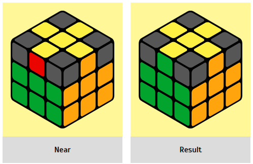

|  |
1. the edges match next to each other If these two edges are adjacent, we put
them on the right and behind, and make the formula RU R' UR U2 R' U and you should get a correct
cross (the color of the edges of the cross matches the centers.
|